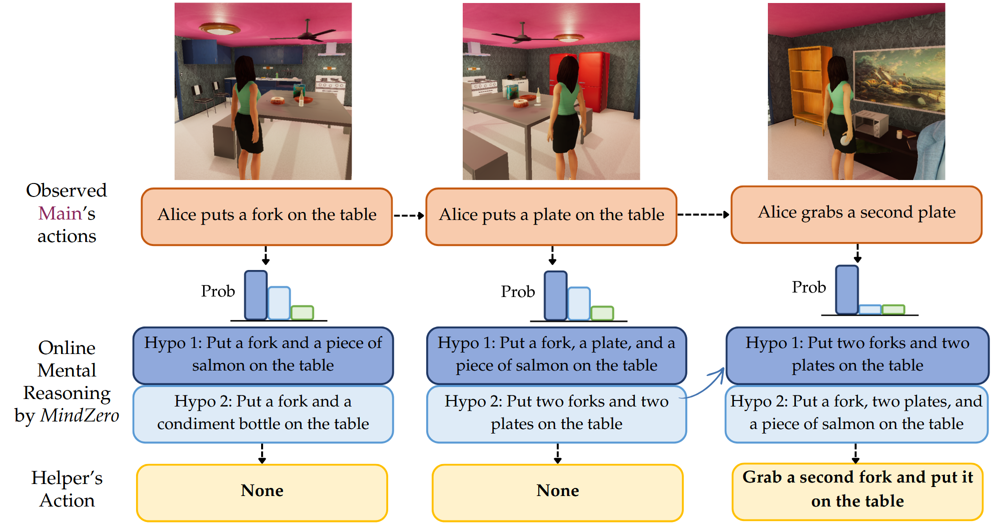
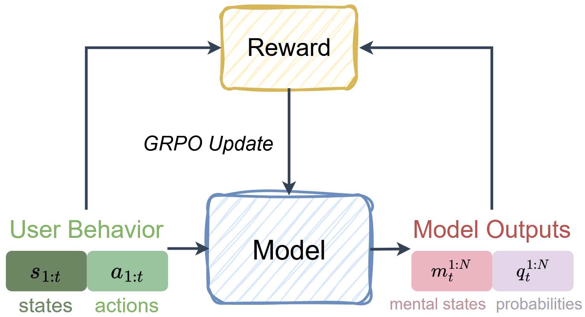
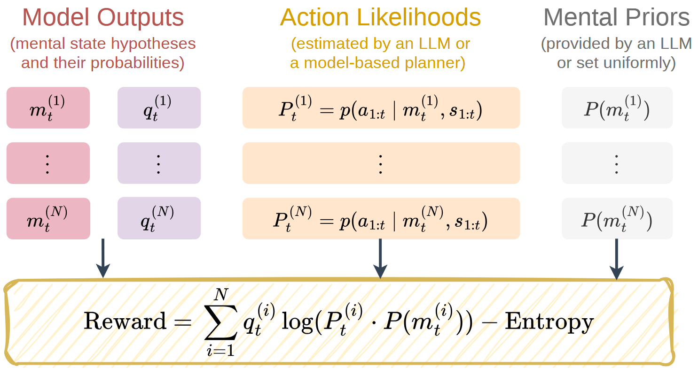
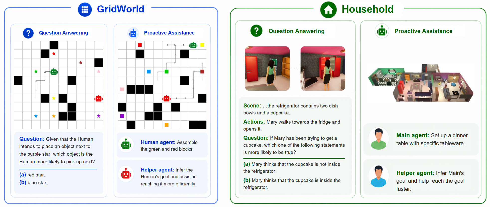
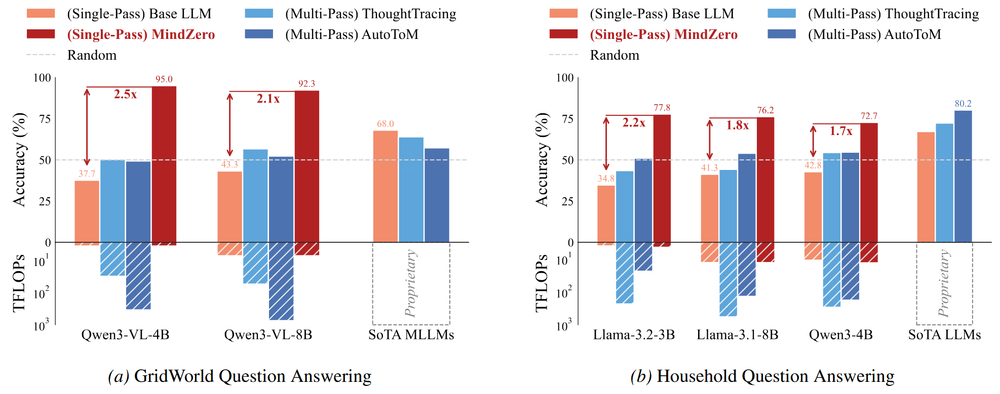
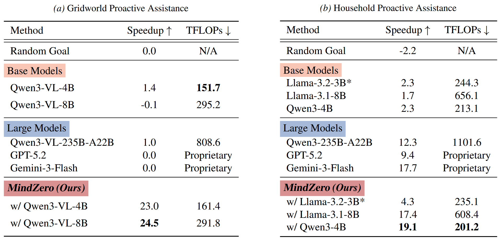
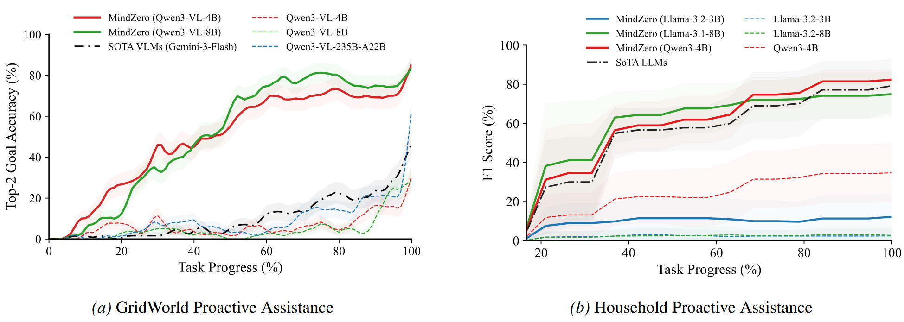
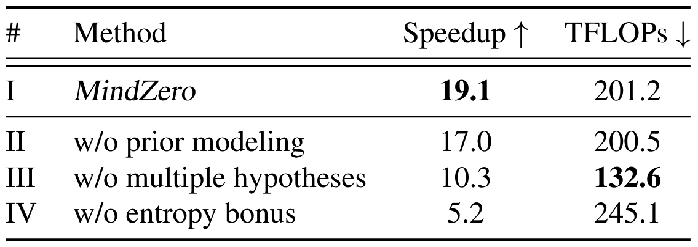

ICML 2026
Learning Online Mental Reasoning With Zero Annotations
Shunchi Zhang1*, Jin Lu1*, Chuanyang Jin1*, Yichao Zhou2*, Zhining Zhang2, Tianmin Shu1
1 Johns Hopkins University 2 Peking University * Equal contribution
Project Page
Code and models are open source
https://scai.cs.jhu.edu/MindZero
01 / Online Mental Reasoning

At every time step, the assistant maintains mental-state hypotheses over latent human goals.
02 / Bayesian Theory of Mind
Posterior the mental-state distribution on the left side
Likelihood how likely the observed actions are under this state
Prior whether the mental state itself is plausible
Model-based ToM (e.g. AutoToM) estimates it through Bayesian networks, but each edge may require an LLM call, which is slow and expensive.
03 / Self-Supervised Reinforcement Learning

Model-based reasoning can be used as the training signal for amortization.
At test time, the model can produce hypotheses in a single pass.
04 / Objective

ELBO encourages hypotheses that explain actions and keep uncertainty.
05 / Setup

Domains
Tasks
06 / Question Answering

MindZero improves significantly over the pretrained checkpoint and is competitive with strong commercial models using much less computation.
07 / Proactive Assistance

MindZero obtains the best speedup efficiently collaborating with both simulated and real humans.
08 / Analysis


09 / Takeaways
Problem Online mental reasoning with uncertainty, efficiency, and zero annotations
Method Online mental reasoning can be learned with self-supervision using RL
Result Efficient single-pass inference at test time and strong results across domains and tasks
Project Page
Code and models are open source
https://scai.cs.jhu.edu/MindZero